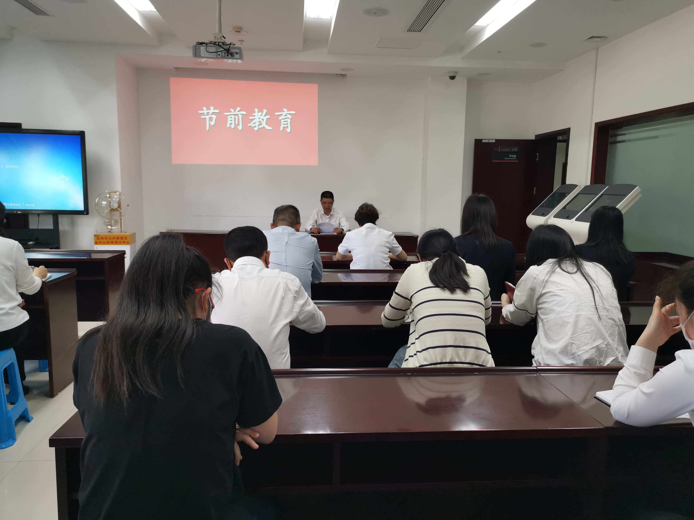

【信息发布时间：2020-05-06阅读次数：】 【我要打印】 【关闭】
4月30日下午，中心召开五一节前会议，全体人员参加了此次会议。会上，传达学习了《关于五一端午期间开展“清风行动”专项督查的工作方案》和《关于加强2020五一劳动节期间公车管理的通知》两份文件，对五一小长假期间公车封存、廉洁过节等事项进行部署。同时，会议传达了《关于对三起违反中央八项规定精神典型问题的通报》，以《通报》中涉及的违纪违规问题警示全体干部职工，要求大家引以为戒，不越纪律红线底线。
最后，中心主任顾一武同志提出四点要求，一是提高政治站位，强化政治担当，在思想和行动上做到两个维护；二是廉洁过节，不做违反中央八项规定精神的事情；三是安全过节，特别是节日期间聚会饮酒问题，坚决杜绝酒后驾车行为；四是做好假期保全工作，检查门窗水电关闭情况，值班人员按时到岗，做好值班工作。
